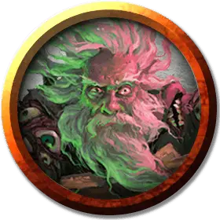

Кукла Халастера
Halaster Puppet
Средний Конструкт, нейтральный, именной НИП

Класс Доспеха 10
Хиты 8 (3к4 + 1)
Скорость 20 футов
| мод | спас | ||
|---|---|---|---|
| СИЛ | 10 | +0 | +0 |
| ЛОВ | 10 | +0 | +0 |
| ТЕЛ | 10 | +0 | +0 |
| мод | спас | ||
|---|---|---|---|
| ИНТ | 10 | +0 | +0 |
| МДР | 10 | +0 | +0 |
| ХАР | 10 | +0 | +0 |
Иммунитет к урону психическая энергия, яд
Иммунитет к состояниям истощение, отравление
Чувства пассивное Восприятие 10
Языки Общий
Опасность —
Бонус мастерства +2
Особенности
Восприимчивость к антимагии. Если на куклу будет наложено с заклинание рассеивание магии [dispel magic] (Сл 15), то она разваливается на части.
Описание
Анимированная, в натуральную величину кукла Халастера Черного Плаща усердно занята над экспериментом.
Кукла сделана из дерева и холстины, на плечи накинут дешевый серый плащ с нашитыми на нём десятками матерчатых глаз.
Кукла реагирует на любое движение в пределах 20 футов от себя и выкрикивает угрозы любому приближающемуся существу голосом Халастера: "Умрёшь страшной и мучительной смертью от магии! Огненные шары и молнии! Прочь!"
Она говорит и понимает Общий язык, но не скажет ничего, кроме пустых угроз и желания спокойно продолжать свою "работу". Если поинтересоваться над чем она работает, то кричит: "Магия!" и смеётся. Персонаж, наблюдающий за её работой и преуспевший в проверке Интеллекта Сл 10 (Магия), удостоверится, что кукла не делает ничего, кроме смешивания безвредных веществ под бормотание не имеющих смысла абракадабр.
Внутри куклы спрятана колба с алхимическим огнем и когда кукла разваливается, колба разбивается и поджигает остатки. Разбитие колбы не причиняет урона находящимся рядом существам.
После уничтожения куклы, прозвучит магическим образом голос Халастера: "Чёрт! И кто теперь найдет лекарство от грязной лихорадки?!" и наступит тишина.